Design · v3 · 2026
Four exploration directions for the BB monogram. The new "light/dark" convention refers to the ink color, not the background: dark = navy + orange ink on a light surface; light = white + orange ink on a dark surface.
Two Bs that share a single vertical stem. Bowls open in opposite directions: left navy, right orange. The pushpin dot anchors the top. Recommended direction.
monogram (dark ink)
monogram (light ink)
appicon (dark)
appicon (light)
rounded (dark)
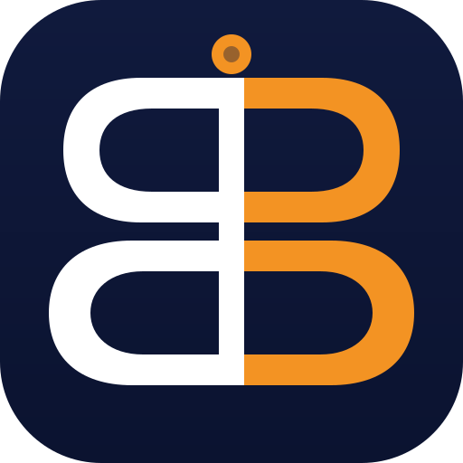
rounded (light)
circular (dark)
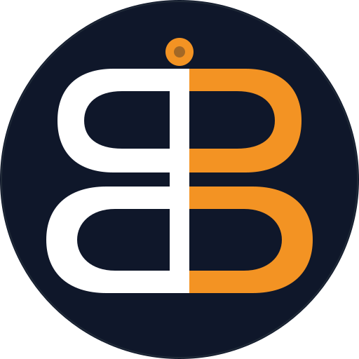
circular (light)
symbol (dark)
symbol (light)
badge (dark)
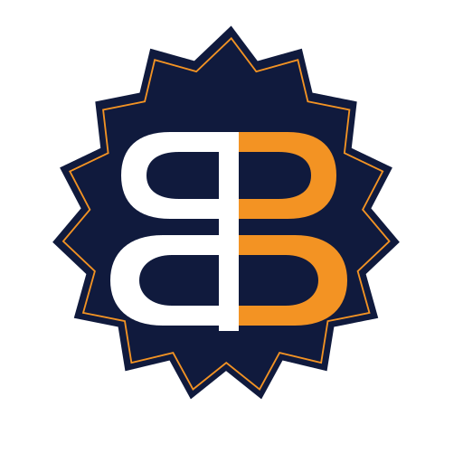
badge (light)
favicon 16/32 (dark)
favicon (light)
mono 24 (dark)
mono 24 (light)
pin (dark)
pin (light)
notification (dark)
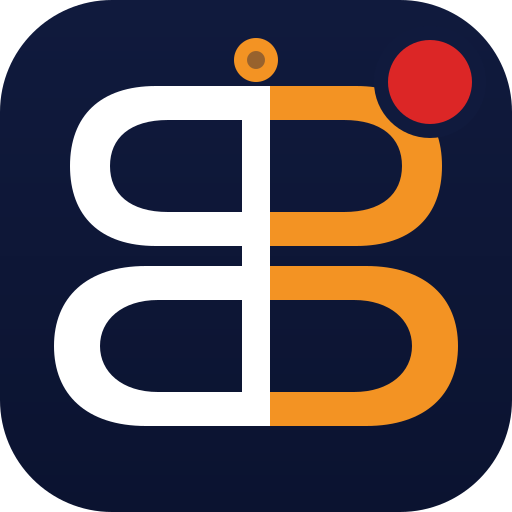
notification (light)
watermark (dark)
watermark (light)
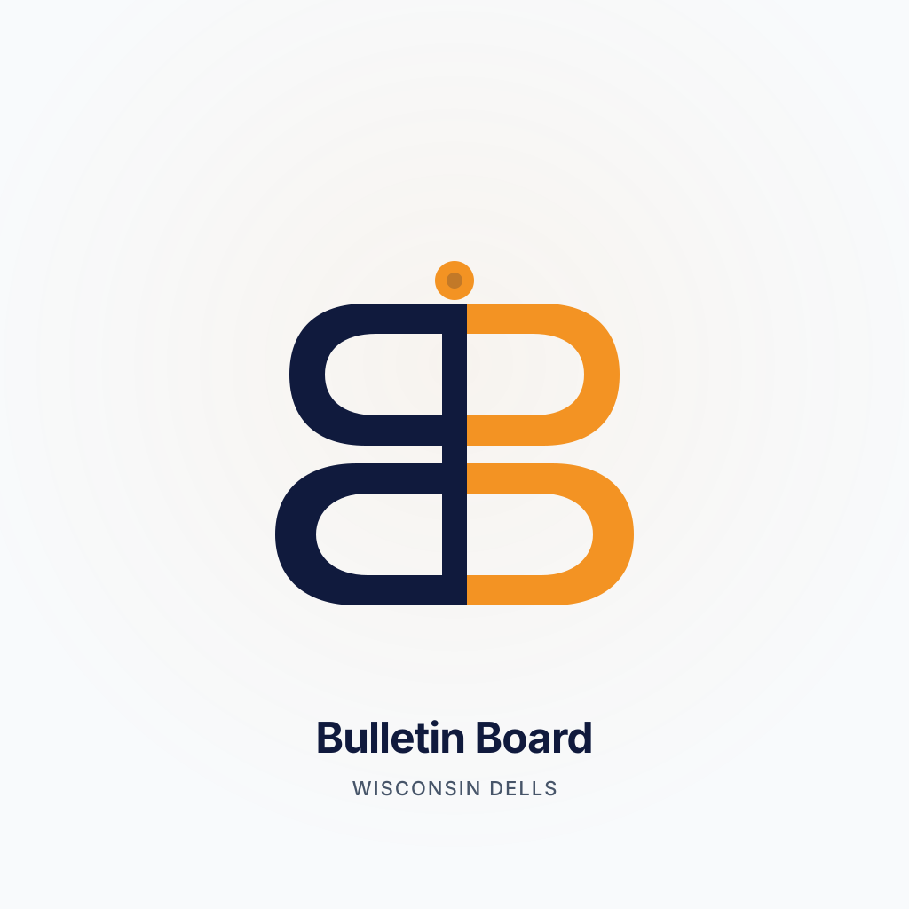
splash (dark)
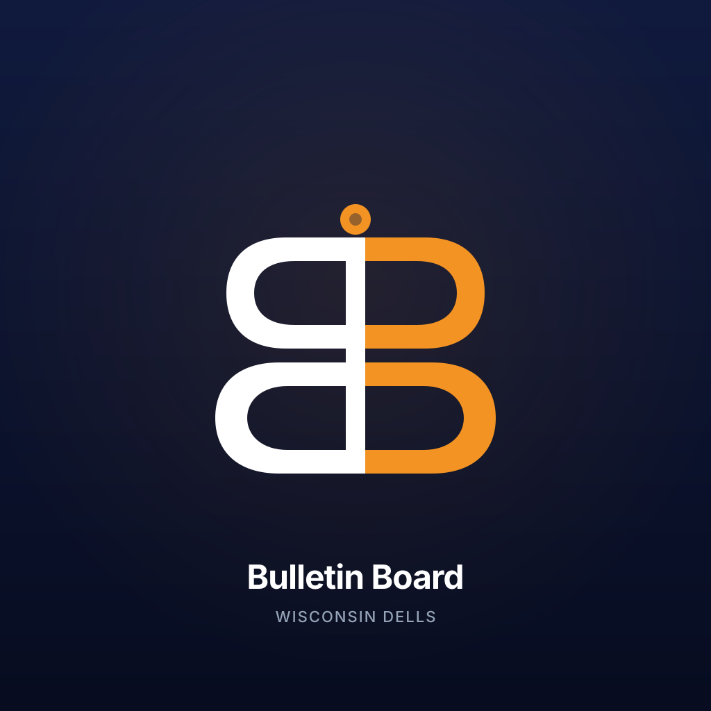
splash (light)
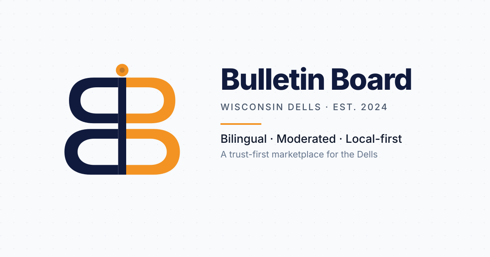
social 1200x630 (dark)
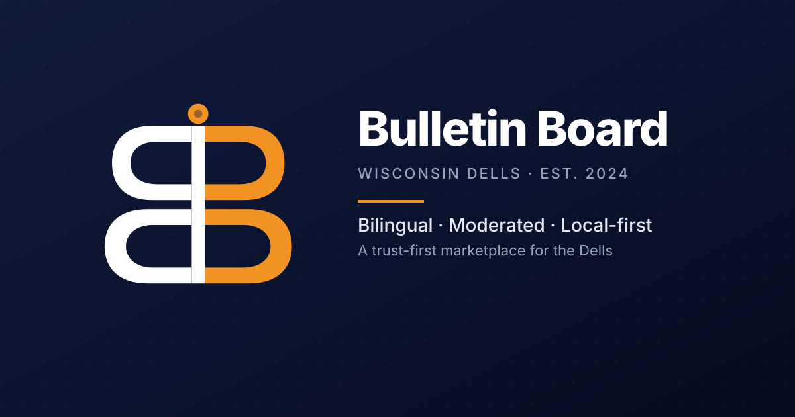
social 1200x630 (light)
Physical bulletin-board metaphor: a navy sticky-note pinned to a warm corkboard surface by a glossy orange pushpin. The note carries the BB monogram. Strong narrative, distinctly off-brand from Booking's flat tile.
appicon (dark)
appicon (light)
rounded (dark)
rounded (light)
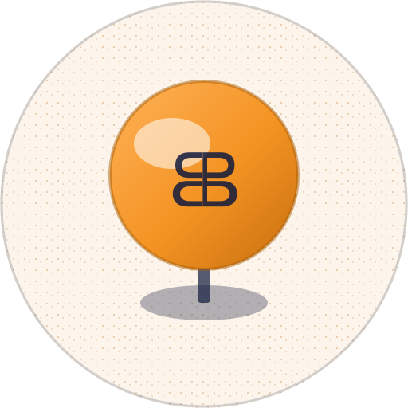
circular (dark)
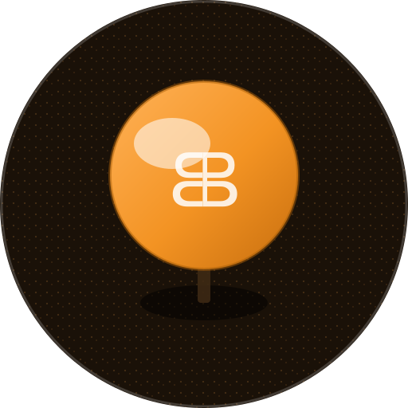
circular (light)
monogram (dark)
monogram (light)
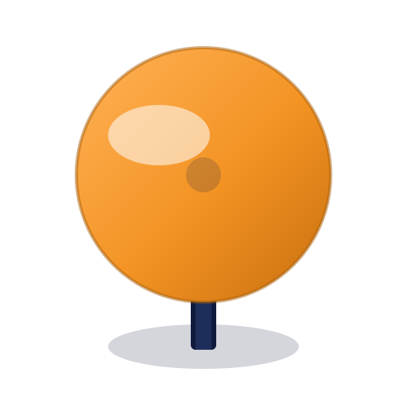
symbol-pin (dark)
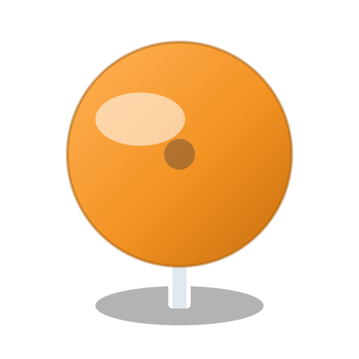
symbol-pin (light)
Sharp 20px corners (not Booking's softer fills), a vertical orange accent tab, eyebrow micro-labels in caps + extra letter-spacing — reads as a magazine masthead, not an app tile.
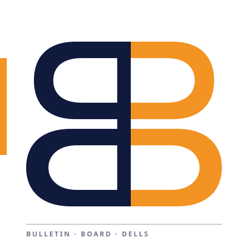
appicon (dark)
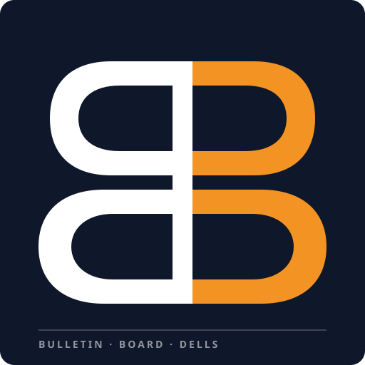
appicon (light)
rounded (dark)
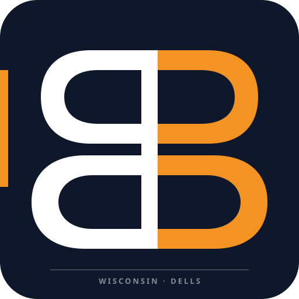
rounded (light)
circular (dark)
circular (light)
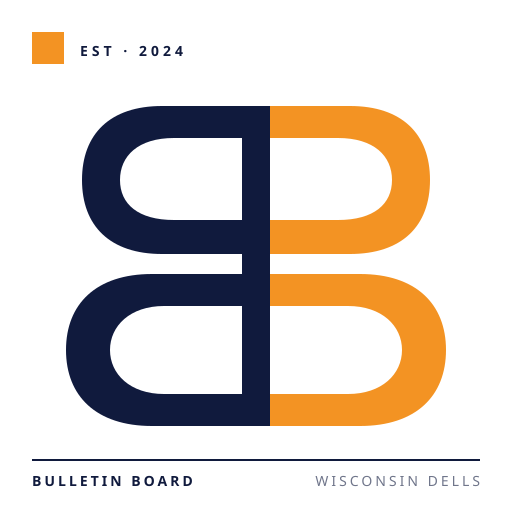
monogram (dark)
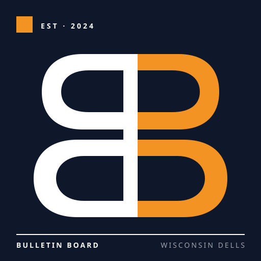
monogram (light)
symbol (dark)
symbol (light)
Skater-zine sticker treatment: irregular rounded shape with a thick white outline + hard offset shadow, sparkle accents. Playful, memorable, anti-corporate — opposite of Booking's serious flat blue.
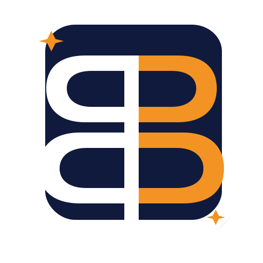
appicon (dark)
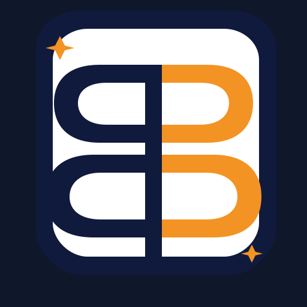
appicon (light)
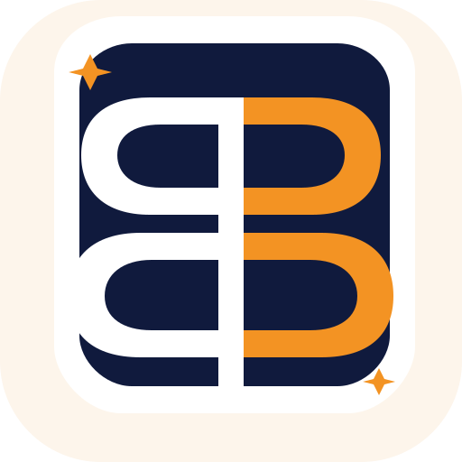
rounded (dark)
rounded (light)
circular (dark)
circular (light)
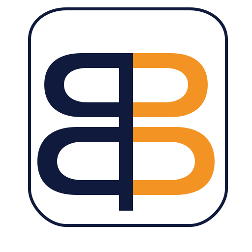
monogram (dark)
monogram (light)
symbol (dark)
symbol (light)